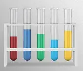

Specimens
A is \(0.100\,mol\,dm^{-3}\) \(CH_3COOH\). B is \(NaOH\). C is \(Al_2(SO_4)_3\) mixed with starch.
Question 1 - Quantitative Analysis
Put A in the burette. Pipette \(25.0\,cm^3\) of B into the flask. Add phenolphthalein and titrate until the pink colour just disappears.
\[CH_3COOH(aq)+NaOH(aq)\rightarrow CH_3COONa(aq)+H_2O(l)\]
- Tabulate results.
- Calculate average titre.
- Calculate concentration of B.
- Calculate mass concentration of NaOH in B.
- Calculate number of moles of water formed.
Question 2 - Qualitative Analysis
- Add water to C, shake and filter if necessary.
- To filtrate add \(NaOH\) in drops and excess.
- To another portion add \(NH_3\) in drops and excess.
- To another portion add \(BaCl_2\), then dilute \(HCl\).
- To residue add water, boil and add iodine.
Question 3 - Practical Knowledge
- Why is phenolphthalein suitable for weak acid-strong base titration?
- State the confirmatory test for starch.
- Give two uses of a wash bottle.
- State the effect of \(Al_2(SO_4)_3(aq)\) on litmus.
Teacher Solution
| Titre | Rough | 1st | 2nd | 3rd |
|---|---|---|---|---|
| A used / \(cm^3\) | 25.35 | 25.10 | 25.05 | 25.10 |
\[Average=25.08\,cm^3\]
\[n(CH_3COOH)=0.100\times\frac{25.08}{1000}=2.508\times10^{-3}\,mol\]
\[C(NaOH)=\frac{2.508\times10^{-3}\times1000}{25.0}=0.100\,mol\,dm^{-3}\]
\[Mass\ concentration=0.100\times40=4.00\,g\,dm^{-3}\]
Moles of water formed \(=2.508\times10^{-3}\,mol\).
Qualitative Report
| Test | Observation | Inference |
|---|---|---|
| Filtrate + NaOH | White ppt soluble in excess. | \(Al^{3+}\), \(Zn^{2+}\) or \(Pb^{2+}\) possible. |
| Filtrate + NH3 | White ppt insoluble in excess. | \(Al^{3+}\) indicated. |
| Filtrate + BaCl2 + HCl | White ppt insoluble in acid. | \(SO_4^{2-}\) present. |
| Residue + iodine | Blue-black colour. | Starch present. |

Sulphate
White \(BaSO_4\) remains insoluble in dilute acid.

Reporting
Observation first, inference second. This is how marks are awarded.